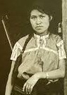

<!--https://www.vogue.mx/estilo-de-vida/articulo/artesanias-mexicanas-significado-historia-y-origen-->
<link rel="stylesheet" href="./css/historias.css">
<section>
    <h1 class="title-historias">Historias</h1>
    <div class="team-row">
        <div class="member">
            
            <h2>Familia Linares, artesanos de cartonería</h2>
            <p>Felipe Linares y Leonardo Linares, hijo y nieto de Pedro Linares –uno de los primeros creadores de alebrijes en la Ciudad de México– dan vida a estas fantásticas criaturas en cartón en su taller de artesanos en el corazón de la ciudad. Vogue se adentra en su taller para conocer la historia y el proceso de esta artesanía tradicional mexicana.</p>
            <br>
            <button class="botonHistoria">Tienda</button>
        </div>
        <div class="member">
            
            <h2>Tezontle, estudio de artistas</h2>
            <p>Lucas Cantú y Carlos H. Matos son los fundadores de Tezontle, un estudio ubicado en el centro de la ciudad que oscila entre los mundos de la escultura y la arquitectura, con el objetivo de producir una variedad de obras en distintas escalas y materiales locales. </p>
            <br>
            <button class="botonHistoria">Tienda</button>
        </div>
        <div class="member">
            
            <h2>Maruch Sántiz Gómez, artista y artesana de 46 años</h2>
            <p>Sántiz Gómez utiliza plantas endémicas para crear tintes naturales que aplica a la lana que trabaja en la comunidad de Chamula, Chiapas. Mediante su obra, explora una variedad de aspectos de su cultura tzotzil, la herbolaria medicinal, la vestimenta, la gastronomía de la región donde creció</p>
            <br>
            <button class="botonHistoria">Tienda</button>
        </div>
    </div>
</section>